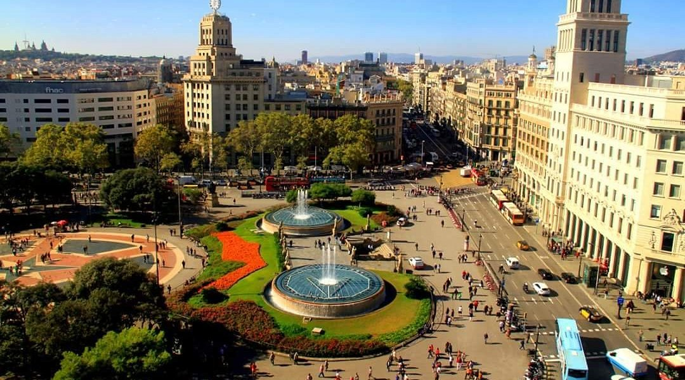
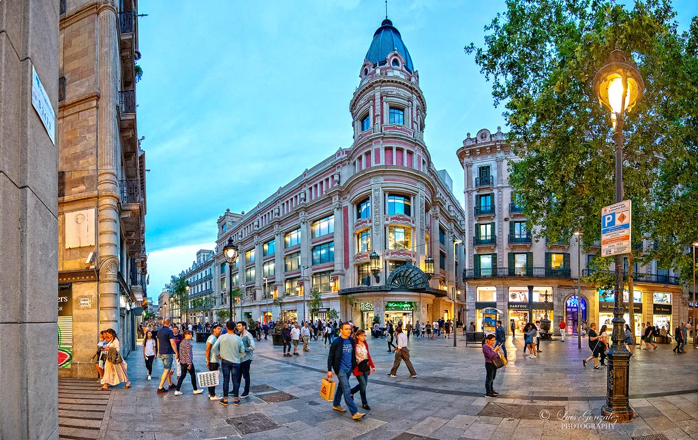
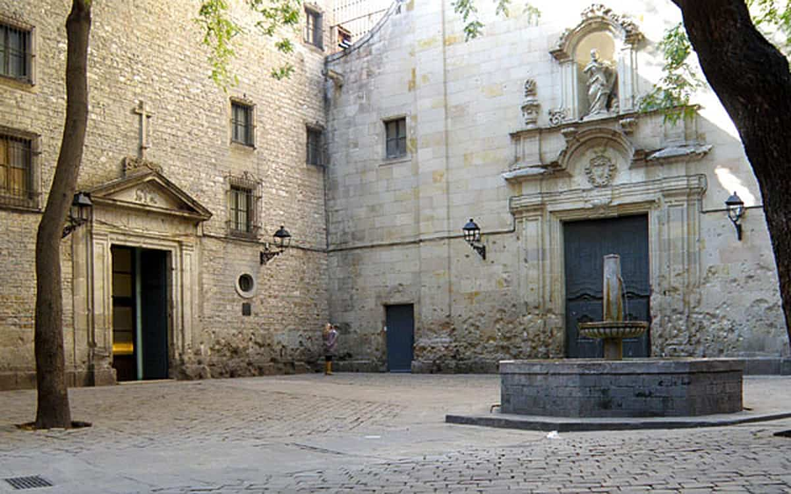
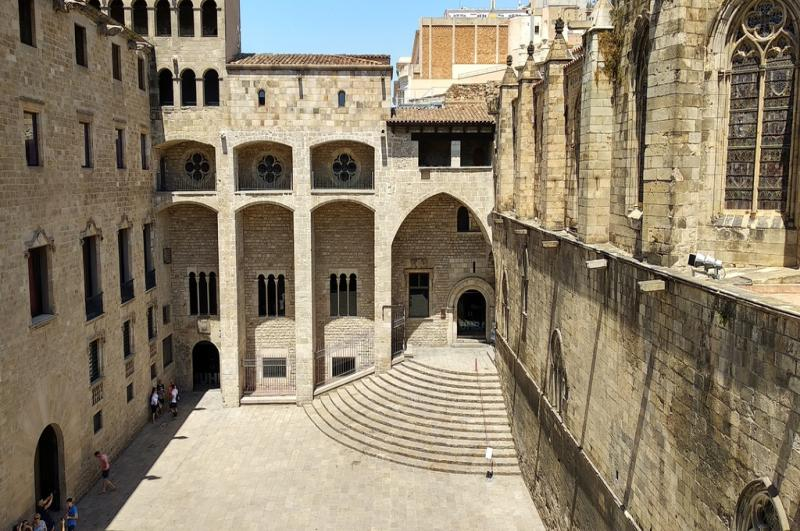
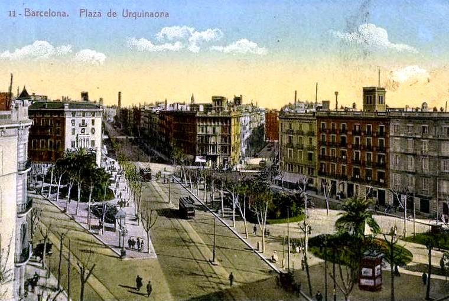
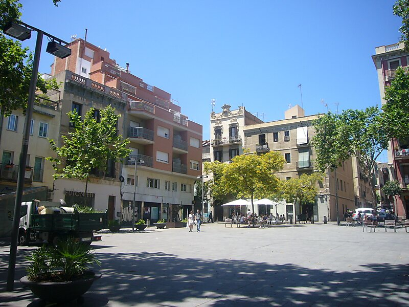
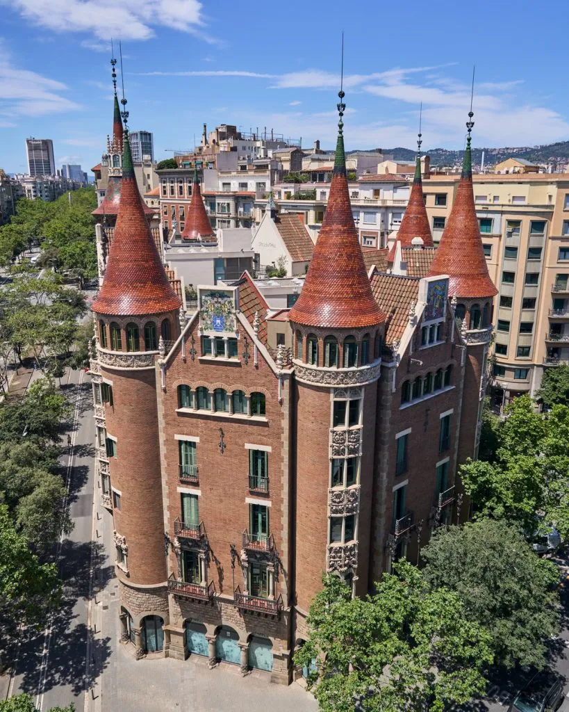
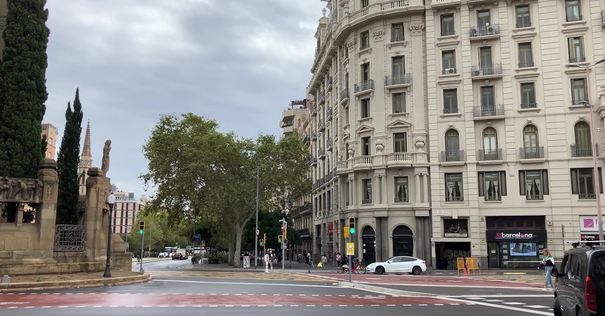
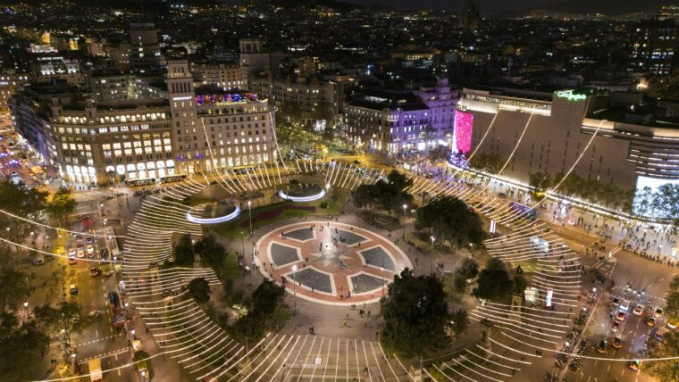

Descripció de la ruta
Aquesta ruta proposa un recorregut circular per alguns dels espais més significatius
de Barcelona durant la Guerra Civil Espanyola (1936–1939). El punt d’inici i final és la
Plaça Catalunya, i el trajecte passa pel Barri Gòtic, el centre històric,
l’Eixample i el barri de Gràcia.
El recorregut està pensat per fer-se a peu, en aproximadament
2 hores, combinant caminades amb aturades d’uns 8–10 minuts a cada lloc
per llegir la informació, observar l’espai i imaginar el context històric.
La ruta se centra en tres grans eixos: la vida quotidiana en temps de guerra, els espais
de poder i control, i la memòria visible que encara resta a les façanes i places.
A cada punt tens un enllaç a un Kahoot de 3 preguntes perquè puguis
jugar mentre ets físicament al lloc.
Punts de la ruta (pinpoints)
1. Plaça Catalunya – El cor de la Barcelona republicana
Punt d’inici i final
Eix neuràlgic

Durant la Guerra Civil, la Plaça Catalunya era el gran centre d’organització política i social
de Barcelona. Des d’aquí sortien columnes de milicians cap al front, s’hi celebraven mítings
i era també un espai de propaganda i mobilització popular. Molts edificis de l’entorn van patir
impactes de metralla i bombardejos aeris.
Pinpoint: Plaça Catalunya, Barcelona
Jugar Kahoot d’aquest punt
2. Portal de l’Àngel – Les marques del foc creuat
Façanes amb metralla
Centre històric

El Portal de l’Àngel és avui una artèria comercial molt concorreguda, però durant els anys
1936–1937 va ser escenari de tirotejos i enfrontaments. Encara avui, algunes façanes mostren
impactes de bala i metralla, un record discret però molt eloqüent de la violència viscuda al
centre de la ciutat.
Pinpoint: Portal de l’Àngel, Barcelona
Jugar Kahoot d’aquest punt
3. Plaça de Sant Felip Neri – La tragèdia dels bombardejos
Bombardeig 1938
Memòria de les víctimes

La plaça de Sant Felip Neri és un dels espais més colpidors de Barcelona. L’any 1938 va ser
bombardejada i hi van morir desenes de persones, molts d’ells infants. La façana de l’església
conserva els impactes de metralla al voltant de la porta: aquestes marques s’han mantingut
expressament com a memorial.
Pinpoint: Plaça de Sant Felip Neri, Barcelona
Jugar Kahoot d’aquest punt
4. Plaça del Rei – Arxius i poder institucional
Barri Gòtic
Arxius històrics

La Plaça del Rei, envoltada d’edificis medievals i renaixentistes, va ser un espai vinculat
a l’administració i a la protecció de documentació durant la guerra. És un lloc ideal per
reflexionar sobre com el poder polític i la gestió de la memòria també formen part del conflicte.
Pinpoint: Plaça del Rei, Barcelona
Jugar Kahoot d’aquest punt
5. Via Laietana 10 – Nervi policial i de repressió
Comissaria
Control polític

La Via Laietana ha estat durant dècades sinònim de control i repressió. Ja en temps de la
Guerra Civil hi havia dependències policials i, posteriorment, en època franquista, es
consolidaria com un dels espais més temuts per a la dissidència política.
Pinpoint: Via Laietana 10, Barcelona
Jugar Kahoot d’aquest punt
6. Plaça d’Urquinaona – Barricades i enfrontaments interns
Fets de Maig 1937
Barricades urbanes

La Plaça d’Urquinaona va ser escenari d’enfrontaments armats durant els Fets de Maig de 1937,
quan diferents grups del bàndol republicà es van enfrontar entre ells. Aquest episodi recorda
la complexitat interna del conflicte i la guerra dins la pròpia rereguarda.
Pinpoint: Plaça d’Urquinaona, Barcelona
Jugar Kahoot d’aquest punt
7. Plaça del Diamant – Refugi antiaeri i vida sota les bombes
Refugi antiaeri
Barri de Gràcia

Sota la Plaça del Diamant s’hi conserva un refugi antiaeri construït per protegir la
població dels bombardejos. Barcelona va ser una de les primeres ciutats bombardejades
sistemàticament per atacar la rereguarda civil.
Pinpoint: Plaça del Diamant, Barcelona
Jugar Kahoot d’aquest punt
8. Casa de les Punxes – Vigilància i arquitectura modernista
Modernisme
Punt estratègic

La Casa de les Punxes és un edifici modernista singular. Durant la guerra, la seva alçada
i situació permetien un bon control visual sobre els carrers de l’Eixample. És un exemple
de com edificis civils i artístics poden adquirir funcions militars en temps de conflicte.
Pinpoint: Casa de les Punxes, Avinguda Diagonal 420, Barcelona
Jugar Kahoot d’aquest punt
9. Avinguda Diagonal / Passeig de Sant Joan – Troncal de mobilització
Artèria viària
Moviments de tropes

Aquest tram de la Diagonal funcionava com una autèntica artèria logística, per on circulaven
vehicles militars, ambulàncies i columnes de combatents en direcció a altres barris i sortides
de la ciutat.
Pinpoint: Cruïlla Avinguda Diagonal / Passeig de Sant Joan, Barcelona
Jugar Kahoot d’aquest punt
10. Retorn a Plaça Catalunya – Tancament del cercle
Fi de la ruta
Reflexió final

La ruta acaba al mateix lloc on ha començat. Després de recórrer refugis, places,
edificis institucionals i carrers marcats per la guerra, la Plaça Catalunya es pot mirar
amb uns altres ulls: com un espai carregat de memòria, on la vida quotidiana actual
conviu amb un passat convuls.
Pinpoint: Plaça Catalunya, Barcelona (final de la ruta)
El Kahoot de reflexió final és el mateix que al punt 1.
Jugar Kahoot (resum final)